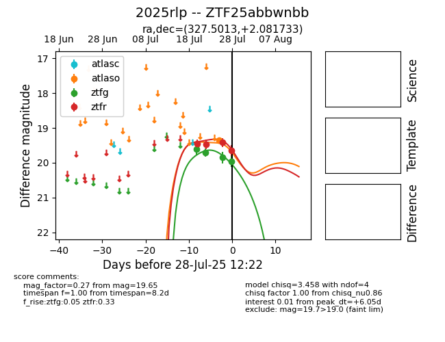

Target 2025rlp at 2025-07-28 12:22, see:
FINK: fink-portal.org/2025rlp
Lasair: lasair-ztf.lsst.ac.uk/objects/2025rlp
ALeRCE: alerce.online/object/2025rlp
TNS: wis-tns.org/object/2025rlp
YSE: ziggy.ucolick.org/yse/transient_detail/2025rlp
alt names
ZTF25abbwnbb (ztf,fink)
2025rlp (tns,yse)
coordinates:
equatorial (ra, dec) = (327.5013,+2.08173)
galactic (l, b) = (59.3035,-37.47350)
photometry
last atlaso=19.36, ztfg=19.97, ztfr=19.65
1 atlaso, 4 ztfg, 4 ztfr detections
